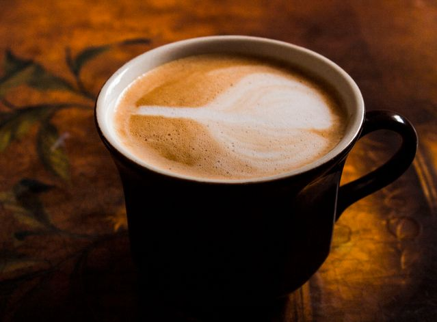
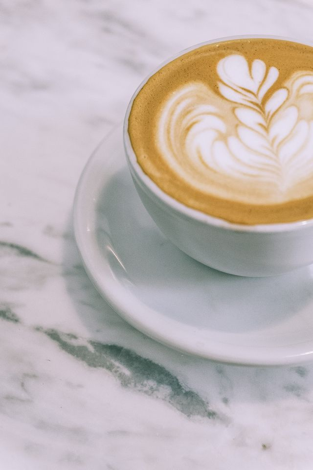

Welcome to my small website about coffee. Here I want to show the most popular coffee drinks and explain how you can make coffee at home.
Popular Coffee Drinks
There are many coffee drinks in cafes. Some of them are strong and small, other ones are big and contain a lot of milk. Here is a short list of the most popular drinks:
- Espresso - a small and very strong drink
- Americano - espresso with hot water
- Cappuccino - espresso with milk and milk foam
- Latte - a lot of milk and a little coffee
- Raf - a sweet drink with cream

How to Make Coffee at Home
You do not need an expensive machine to make good coffee. I usually make my coffee in a simple way. These are the steps that I follow:
- Boil the water and wait about one minute
- Put two spoons of ground coffee into the cup
- Pour the hot water into the cup
- Wait four minutes
- Add sugar or milk if you want
